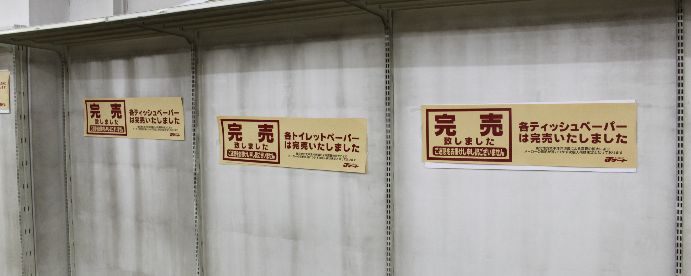

東日本大震災 東京・多摩地方、 および その周辺での体験記 ― その２ ― |
<第２部> 「地震や津波の起こるわけ」 <第３部> 「ふだんの生活への影響」 － もくじ － <第１部> 「３月１１日のこと」 こちらへ |
「作文ワールド」総合案内 「道場日記抄」 トップページ
作文打出の小づち
総もくじ
作文編 国語編 小論文編 閑 話
| 東日本大震災「体験記」－無料添削案内 |
ふだんは考えたこともないことを
大震災をきっかけに考えることになった。
と言っても、小学生には少々難題であった。
それでも、だれそれの話を聞きながら、
小学生新聞やインターネットで調べていった。
この情報収集の中で、
中心になったのは中学生の理科の教科書である。
そのためか、みんなの書いたものは
だいたい似たものになった。
そこで、ここでは
小学生、中学生各1人の作文を紹介するにとどめよう。
学年は大震災発生時のものであるが、
書いたのは、学年が一つ進んでからである。
| 書き直した作文 | 添削例・諸注意 |
| 地震には大きく分けて二つの種類がある。一つはプレート型で、もう一つは断層型だ。 日本の周辺には「ユーラシアプレート」、「北アメリカプレート」（大陸プレート）と「フィリピン海プレート」、「太平洋プレート」（海洋プレート）がある。西日本はユーラシアプレートに、東日本は北アメリカプレートに乗っている。プレートの厚さは約100キロメートルある。 プレートどうしはいつも押し合いへし合いしていて、海洋プレートは大陸プレートの下にもぐり込もうとしている。大陸プレートの先端が海洋プレートに引きずり込まれていくと、しだいに先端が曲がって、ある程度までくると、耐えられなくなってはね上がる。そのとき地震が起こる。同時に、それが海底で起こると、はね上がったプレートに海水が持ち上げられ、大きな波になって陸に押し寄せる。今回の東日本大震災はこのようにして起きた。はね上がったプレートが南北400キロメートルに広がっていたため、宮城県を中心に岩手、青森、福島、茨城、千葉にまで津波が押し寄せた。 これがプレート型地震で、もう一つは断層型地震である。大地は常に四方八方から圧力を受けている。大地のどこか一点に圧力が集中すると、断層が上下や前後にずれる。このとき地震が起こる。阪神大震災は断層が上下にずれて起きたものだった。このときは震源が地中だったので、津波は起きなかった。 |
○ この大震災は、放送局や新聞によっては、はじめは「東北関東太平洋岸大震災」とも呼ばれていたね。 |
海斗くんは調べては書き、書いては直しして
こんなところに落ち着いた。
最後に参考にしたのは海路くん(中Ⅰ）や拓生くん（中Ⅰ）の
ものである。
両君には海斗くんに花を持たせてもらった。
地震や津波のメカニズムについては
海斗くんの理解でじゅうぶんであろうが、
もう一つ、
学習の成果を紹介しよう。
（分類用語の違いは参考資料の違いによる）。
| はじめの作文 | 添削例・諸注意 |
| 3月11日に三陸沖を震源とするマグニチュード９．０の地震が起き、東北関東の太平洋沿岸で７メートル以上の大津波も発生しました。 地球の表面はプレートという、厚さ100キロメートルほどの固い岩盤で覆われています。プレートは地球全体で十数枚に分かれていて、年に数センチほど動いています。プレートどうしが近づく所ではぶつかり合うなどして力が加わり、地震のもとになる力が蓄えられます。 日本列島はユーラシアプレートと北アメリカプレートの大陸プレート、太平洋プレートとフィリピン海プレートの海洋プレートの4つのプレートが衝突する場所にあります。そのため、世界的に地震の多い地域になっています。 地震は、大きく二種類に分かれます。一つは「プレート境界型」です。海洋プレートが大陸プレートの下に沈み込むときに、大陸プレートの先端が巻き込まれ、それが限界に達したときに反発して跳ね上がります。そして、地下の岩盤が破壊されて地震が発生します。この地震には数十年から百年の周期性があり、マグニチュード８クラスの巨大地震になります。この時に海では、海底が急に盛り上がって、その上の海水全体が持ち上げられ、海面が盛り上がって回りに広がり、津波が起きます。今回の東北地方太平洋沖地震はこのタイプです。 もう一つは「内陸型地震」です。プレートの沈み込みで生じた力は、プレート境界から離れた日本列島の下にも働きます。その力は地中を伝わって断層を刺激します。断層とは、ひび割れのことです。今から数十万年前までにできた断層のうち、再びずれて地震を起こす可能性のあるものを、特に活断層といいます。内陸型地震は、プレート境界型地震と比べて規模は小さいのですが、地下の浅い所で発生するため、大きな揺れとなります。1995年の阪神大震災はこのタイプの地震でした。 私は、今回の地震を体験して、自然の力はすごいと思いました。このような地震がいつまた起きるか分からないので、供えだけはしっかりしておきたいと思います。 |
← ……離れた所、例えば日本列島の下にも…… |
大震災の１年後ぐらいに、巨大津波についての詳しい研究結果が発表された。
それによると、
初めに盛り上がった海水が、岩盤の２次、３次のはね上がりによって
次々に押し上げられ巨大化していったということである。
もどる
大震災では生活に打撃を受けるというほどの深刻なものはなかったが、
それでも、生徒諸君には初めて体験するような、生活への影響があった。
体験には共通することがらも多いが、
それぞれに状況も印象も異なっている。
タイトルは、作文の中心となっていることがらに対して付けたものである。
例によって、
学年は地震発生時のもので、書いたのは次の学年にかけてである。
| １ | 電話が不通 （中Ⅰ海路くん） | ７ | チェーンメール （小６ さらさん） | ||
| ２ | 貴重なパン （小６ 萌香さん） | ８ | 計画停電 （小５ 光亮くん）） | ||
| ３ | 牛乳買い （中Ⅰ 太一くん） | ９ | 福島からの避難 （中２ 夏実さん） | ||
| ４ | お米探し （小５ 樹里さん） | 10 | 節電 （小５ 咲歩さん） | ||
| ５ | 給食が中止 （小５ 三鈴さん） | 11 | 放射能汚染水 （小４ 海斗くん） | ||
| ６ | ガソリン不足 （小５ 咲歩さん） | 12 | |||
書きたいことがいろいろあっても、作文としては、
主なものを３つぐらいにしておくのがよい。
こんなほほ笑ましいこともあったのだ。
家庭の和やかさがしのばれる。
もどる
「買い置き」は、ふだんどこの家でもしていることであって、
もちろん、「買い占め」とは異なる。
「買い占め」の様子にはすさまじいものがあった。
「第1部」のフッター（最下段）の写真、
および、このページのフッターの写真参照。
もどる
神奈川と東京の違いは何だったのだろう、
考えてみるに値する。
この作文は、実際は中１になってから書いたものである。
作文の終わりには、
「４月になって、入学式は無事に行われました」とある。
もどる
| 3月11日に私たちがカラオケの部屋に閉じ込められていた頃、東北地方では大津波が押し寄せていました。 次の日の朝４時半に帰ってきて、午後４時までずっと眠っていました。バレエの練習があるのも忘れていました。母から、休みの連絡があったと聞いて、ほっとしました。その日はいろいろな友達に、だいじょうぶだったことをメールで知らせて終わりました。 その次の日の日曜日、いろいろな人から、コスモ石油についてのチェーンメールが送られてきました。それには、「コスモ石油の千葉製油所が火災を起こし、首都圏では化学薬品の含まれた雨が降るかもしれないので、レインコートとカサの使用をお願いします」と書かれていました。しかし、これはうそでした。地震で被災地の人や多くの人が困っているというのに、こんなチェーンメールを作る人の神経が分からないと思いました。 14日の月曜日、父と母は仕事に行きました。私は姉と朝早くから食料の買い出しに出かけました。コンビニには、どこも、かなり遠くまで行っても何もなく、スーパーの開店を待って、やっとパンとパスタを手に入れました。お米はどこにもありませんでした。 その頃、祖母の家に福島のいわき市で被災した親戚がやってきました。祖母の姉と母の姉です。家が古くて壊れそうだからということでした。いわきの親類の中には津波で家が流された人もいたそうです。２～３週間して、二人は家の片づけに帰りました。大きな余震が続いているということなので、帰ってもだいじょうぶなのかなと、とても心配になりました。 被災地では、避難生活を余儀なくされている人がたくさんいます。一刻も早くみんなが安心して暮らせるようになってほしいと思います。 |
○ コスモ石油の火災自体は実際にあったんだよね。 |
| 4月の中ごろ、国分寺駅でエスカレーターが止まっていました。わたしは節電のためなのだなあと思いました。エスカレーターが止まっていたので、みんな階段を上っていました。少ししんどいけれど、それはよいことだと思いました。健康によく、体力もつくからです。特に、太っている人は、エスカレーターが動いているときでも乗らないで、階段を上るとよいと思いました。 また、電車の中でも節電していました。本を読む人にとっては、少し暗いかもしれませんが、地球にとってはとてもよいことです。わたしは、大地震が起こる前から節電をしておけばよかったなあと思いました。だれもいない部屋の電気をつけっぱなしにしていたり、エアコンの温度が低すぎたりしたことを反省しました。 一人が節電してもたいしたことはありませんが、大勢の人が節電すれば大きな量になるでしょう。わたしはその一人として、節電を心がけたいと思います。 |
駅やデパートなどが照明の明るさを落としていたころ、
あるフランス人が「ああ、パリと同じくらいになった」と言ったという記事が、
新聞に出ていた。
暗いと思っても、それに慣れてしまえば、不便とは思わなくなるようだ。
そんな経験をしてみると、
明るさが元に戻ったスーパーなどでは、無節操だとの思いをぬぐえない。
もどる
| ぼくは大地震の２，３日後にスーパーに行きました。パンやカップラーメンのたなはほとんどからっぽでした。ポテトチップスなどもなかったです。買いだめする人がいるので、なくなったのだと思いました。その日は、パンは買えませんでしたが、カップラーメンが少し残っていたので、まずそうでしたが買いました。 ５日ぐらいたって、計画停電がありました。停電のとき、時間を過ぎても電気が消えなかったので、「今日は停電が中止されたのかな」と思っていると、いきなり電気が消えました。真っ暗で何も見えませんでした。停電になってから１５分くらいたって、することが何もなかったので、ねました。 ３週間くらいたって、水道水から放射線が計測されて、東京２３区のほか、武蔵野市や三鷹市とともに多摩市でも、赤ん坊に飲ませてはいけないという知らせが出ました。スーパーへ行くと、水は売り切れでした。ジュースはたくさん残っていました。水を買いたかったのに、水を売っていなかったので、こまりました。 でも、飲んではいけないのは赤ん坊だけだったので、家ではふだんと同じように水道水を使っていました。 |
海斗くんは多摩市に住んでいる。多摩市は多摩川の南にある。
武蔵野市や三鷹市は多摩川の北にあって、２３区の西端に接している。
水道水に放射線が計測されたのは、
東京の東端・葛飾区の金町浄水場においてであった。
水道水は多摩地方から都区内に送られているとばかり思っていたが、
都内から多摩のほうへ送られてもいたのだ。
汚染水の一件は、ふだんは分からなかったことを知る機会ともなった。
東日本大震災による災害は、東北太平洋沿岸という一地域の災害ではなく、
日本の、千年に一度の大災害であった。
第1部、第3部の作文は、その大災害の一端の記録である。

大震災５日後（３月１６日）の、道場の近くのホームセンターの棚